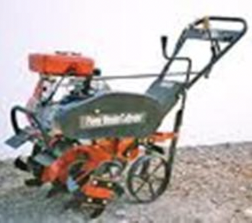

6.0 इंटरकल्चर उपकरण
- 6.1 सूखी भूमि खूंटी वीडर
- 6.2 पहिया हाथ कुदाल
- 6.3 कोनो वीडर
- 6.4 पावर टिलर संचालित स्वीप टाइन कल्टीवेटर
- 6.5 सेल्फ प्रोपेल्ड पावर वीडर
6.1 शुष्क भूमि खूंटी वीडर

विशेषताएं
शुष्क भूमि वीडर (खूंटी प्रकार) फसल पंक्तियों के बीच संचालन के लिए उपयुक्त मैन्युअल रूप से संचालित वीडर है। इसमें एक रोलर होता है, जिसमें दो हल्के स्टील डिस्क होते हैं जो हल्के स्टील की छड़ से जुड़े होते हैं। छोटे हीरे के आकार के खूंटे को कंपित तरीके से छड़ पर वेल्ड किया जाता है। पूरी रोलर असेंबली माइल्ड स्टील से बनी है। वी आकार का ब्लेड रोलर असेंबली का अनुसरण करता है और इसे बाहों पर लगाया जाता है ... ब्लेड की ऊंचाई को काम की गहराई के अनुसार समायोजित किया जा सकता है। हथियार हैंडल असेंबली से जुड़े होते हैं, जो पतली दीवार वाले पाइप से बने होते हैं। ऑपरेटर की आवश्यकता के अनुसार हैंडल की ऊंचाई को भी समायोजित किया जा सकता है। खरपतवार हटाने के लिए इसे बार-बार धकेला जाता है और खड़ी स्थिति में फसल की पंक्तियों के बीच खींचा जाता है। हीरे के आकार के खूंटे मिट्टी में घुस जाते हैं और लुढ़कने की क्रिया मिट्टी को चूर-चूर कर देती है। पुश मोड में ब्लेड मिट्टी में प्रवेश करता है और मातम को काटता या उखाड़ता है.
विशेष विवरण:
| कुल लंबाई (मिमी) : | : 1680 |
| कुल चौड़ाई (मिमी) : | : 590 |
| कुल ऊंचाई (मिमी) : | : 1080 |
| खूंटी पहिया का व्यास (मिमी) : | : 220 |
| कार्य चौड़ाई (मिमी) : | : 150 |
| वजन (किलोग्राम) : | : 8-10 |
उपयोग:
वीडर का उपयोग सब्जियों के बगीचों, बाग के पेड़ों के घाटियों और अंगूर के बागानों में खरपतवारों को हटाने के लिए किया जाता है। इसका उपयोग मिट्टी की पपड़ी को तोड़ने और मिट्टी की गीली घास के निर्माण के लिए भी किया जाता है।
मशीन की लागत: रु.800/-
6.2पहिया हाथ कुदाल

विशेषताएं
पंक्ति फसलों में निराई और इंटरकल्चर करने के लिए व्हील हैंड कुदाल व्यापक रूप से स्वीकृत निराई उपकरण है। यह एक लंबे समय तक संभाला जाने वाला उपकरण है जो क्रिया को धक्का और खींचकर संचालित किया जाता है। पहिये की संख्या एक से दो तक भिन्न होती है और व्यास डिजाइन पर निर्भर करता है। फ्रेम में विभिन्न प्रकार के मिट्टी के काम करने वाले औजारों जैसे सीधे ब्लेड, को समायोजित करने का प्रावधान है। रिवर्सिबल ब्लेड, स्वीप, वी-ब्लेड, टाइन कल्टीवेटर, प्रोंग्ड हो, मिनिएचर फ्यूरोवर, स्पाइक हैरो (रेक) आदि। इसे एक व्यक्ति द्वारा संचालित किया जा सकता है। उपकरण के सभी मिट्टी के काम करने वाले घटक बने होते हैं मध्यम कार्बन स्टील से और 40-45 एचआरसी तक कठोर। ऑपरेशन के लिए, उपकरण की कार्य गहराई और हैंडल की ऊंचाई को समायोजित किया जाता है और व्हील हो को बार-बार पुश-पुल एक्शन द्वारा संचालित किया जाता है जो अनुमति देता है मिट्टी में काम करने वाले घटक मिट्टी में प्रवेश करते हैं और फसल की पंक्तियों के बीच के खरपतवारों को काटते/उखाड़ते हैं। इस क्रिया से खरपतवार भी मिट्टी में दब जाते हैं।
विशेष विवरण:
| कुल लंबाई (मिमी) : | : 1400- 1500 |
| कुल चौड़ाई (मिमी) : | : 450- 500 |
| कुल ऊंचाई (मिमी) : | : 800- 1000 |
| टाइन की संख्या | : 3 No. |
| व्हील व्यास (मिमी) | : 200- 600 |
| कार्य गहराई (मिमी) | : Upto 60 |
| वजन (किलोग्राम) | : 4- 12 |
उपयोग:
पंक्तियों में बोई गई सब्जियों और अन्य फसलों में निराई और अंतर-सांस्कृतिक कार्यों के लिए।
मशीन की लागत : 1200/- रुपये
6.3 कोनो वीडर

विशेषताएं
वीडर में दो रोटार होते हैं, फ्लोट, फ्रेम और हैंडल। रोटार आकार में शंकु छिन्नक के होते हैं, चिकनी और दाँतेदार स्ट्रिप्स को वेल्डेड किया जाता है इसकी लंबाई के साथ सतह। रोटार विपरीत अभिविन्यास के साथ मिलकर घुड़सवार होते हैं। फ्लोट, रोटार और हैंडल फ्रेम से जुड़े हुए हैं। फ्लोट काम की गहराई को नियंत्रित करता है और नहीं रोटर असेंबली को पोखर में डूबने दें। कोनो वीडर को पुश एक्शन द्वारा संचालित किया जाता है। रोटार का अभिविन्यास शीर्ष 3 सेमी मिट्टी में आगे और पीछे की गति पैदा करता है और मातम को उखाड़ने में मदद करता है।
विशेष विवरण:
| चौड़ाई (मिमी) | : |
| ऊंचाई (मिमी) | : 1400 |
| प्रकार | : मैन्युअल रूप से संचालित |
| वजन (किलोग्राम) | : 5 से 6 |
| रोटर्स की संख्या | : 2 |
| क्षमता (हेक्टेयर/दिन)' | : 0.18 |
उपयोग:
कोनो वीडर का उपयोग धान की फसल की पंक्तियों के बीच के खरपतवारों को कुशलतापूर्वक हटाने के लिए किया जाता है। यह संचालित करना आसान है, और पोखर में नहीं डूबता है।
मशीन की लागत : 1500/- रुपये
6.4 पावर टिलर संचालित स्वीप टाइन कल्टीवेटर

विशेषताएं
इस मशीन को विशेष रूप से 5-8 hp (4.5-6.0 kW) के पावर टिलर के साथ संचालन के लिए डिज़ाइन किया गया है। सोयाबीन, ज्वार, बंगाल चना, अरहर आदि में खड़ी फसल में इंटरकल्चर संचालन करने के लिए जहां पंक्तियों की दूरी इतनी चौड़ी हो कि पावर टिलर पौधों को नुकसान पहुंचाए बिना गुजर सके। संचालन की एक समान गहराई बनाए रखने के लिए इसके पिछले हिस्से में एक गहराई नियंत्रण पहिया दिया गया है। यह मध्यम और हल्की मिट्टी के लिए उपयुक्त है। इसे संचालन के लिए ग्राउंड व्हील के साथ प्रदान किया गया है पैमाइश तंत्र। इसके कुछ प्रमुख घटक हिच सिस्टम, हैंडल के साथ मुख्य फ्रेम हैं। और ड्राइव व्हील और टाइन।
विशेष विवरण:
| लंबाई (मिमी) | : 930 |
| चौड़ाई (मिमी) | : 1580 |
| ऊंचाई (मिमी) | : 1370 |
| वजन (किलोग्राम) | : 40 |
| कार्य चौड़ाई (मिमी) | : 1350 |
| कार्य गहराई (मिमी) | : 50 |
| निराई दक्षता (%) | : 50-60 |
| ऑपरेटिंग गति (किमी / घंटा) | : 1.8-2.5 |
| ईंधन की खपत (लंबाई/ऊंचाई ) | : 0.7-1.0 |
| खेत की क्षमता(ha/h) | : 0.18-0.25 |
| शक्ति का स्रोत(hp/kW) | : 5-8/4.5-6.0, इंजन |
उपयोग:
इसका उपयोग सोयाबीन, ज्वार, बंगाल चना, अरहर आदि में खड़ी फसल में इंटरकल्चर संचालन करने के लिए किया जाता है।
मशीन की कीमत : 15,000/- रुपये
6.5सेल्फ प्रोपेल्ड पावर वीडर
विशेषताएं
एक डीजल इंजन वीडर संचालित करता है। इंजन की शक्ति को किसके माध्यम से जमीन के पहियों तक पहुँचाया जाता है वी बेल्ट-चरखी। ऑपरेटिंग गहराई को बनाए रखने के लिए पीछे की तरफ एक टेल व्हील दिया गया है। रोटरी निराई संलग्नक द्वारा निराई की जाती है। रोटरी वीडर में की तीन पंक्तियाँ होती हैं प्रत्येक डिस्क में वैकल्पिक रूप से विपरीत दिशाओं में 6 घुमावदार ब्लेड के साथ घुड़सवार डिस्क। घुमाते समय ये ब्लेड मिट्टी को काटने और मल्चिंग करने में सक्षम होते हैं। रोटरी के कवरेज की चौड़ाई जुताई 500 मिमी है और फसल के खेत में मिट्टी की निराई और मल्चिंग के लिए ऑपरेशन की गहराई को समायोजित किया जा सकता है।
विशेष विवरण:
| प्रकार | : स्वनोदित |
| कुल आयाम(LxWXH) | : 2400 x 1750 x 1100 मिमी |
| वज़न | : 200 किलोग्राम |
| क्षमता | : 1 - 1.2 ha प्रति दिन |
| बिजली की आवश्यकता (hp/kW) | : 3-5/2.25-3.75 डीजल/पेट्रोल इंजन |
उपयोग:
फसलों की पंक्तियों जैसे टैपिओका, कपास, गन्ना, मक्का, टमाटर और दालों के बीच 45 सेमी से अधिक की दूरी वाली फसलों के बीच निराई के लिए उपयोगी है। मशीन के साथ स्वीप ब्लेड, रिगर, ट्रेलर जैसे अटैचमेंट लगाए जा सकते हैं।